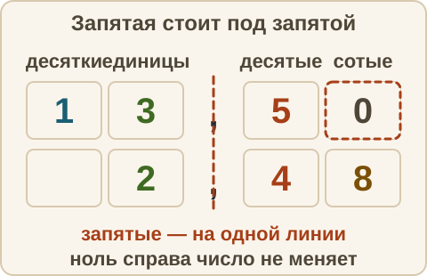
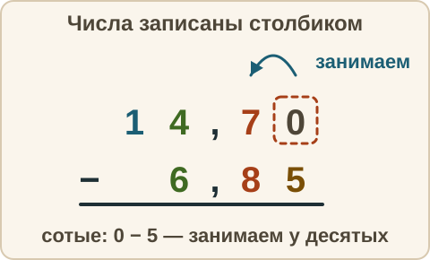

Математика: база · занятие 10Сложение и вычитание десятичных дробей
Цель: ты складываешь и вычитаешь десятичные дроби столбиком: ставишь запятую под запятой, дописываешь нули и решаешь задачу с деньгами. Это задание 6 ОГЭ. Ответы и подсказки спрятаны: сначала реши сам, потом нажми кнопку.
Как записывать ответ. Число — целое число. Дробь — через черту и сокращённая до конца, например 3/4. Смешанное число — целая часть, пробел, дробь, например 2 3/4. Десятичная дробь — с запятой, например 3,25. Знак — один символ: <, > или =.
Вспомнить
Без подсказок, сразу проверка. Отмечай, на чём споткнулся, — в журнал.
- Запиши цифрами: «шесть целых пять сотых».
- Округли 3,846 до сотых.
- Знак: 0,09 и 0,1.
- 3/5 : 9/10
- 7/9 − 1/6
- 29 · 13
Беглость: до единицы и вокруг
Игра «до единицы и вокруг». Ошибся — пример вернётся: попробуй ещё раз. Без таймера. Пока считаешь, скажи себе, на какие десятые или сотые смотришь.
- 1 − 0,3
- 1 − 0,25
- 1 − 0,6
- 1 − 0,05
- 0,8 + 0,5
- 0,9 − 0,4
- 0,15 + 0,05
- 0,4 + 0,7
Правило
Складываем и вычитаем столбиком. Разряд — это место цифры в числе: единицы, десятые, сотые. Слагаемые — числа, которые складывают. Уменьшаемое — число, из которого вычитают, вычитаемое — число, которое вычитают.
- Запиши числа друг под другом так, чтобы запятая стояла под запятой: единицы под единицами, десятые под десятыми, сотые под сотыми.
- Пустые места справа заполни нулями: 3,5 = 3,50, а целое 7 = 7,00. Ноль в конце дробной части число не меняет.
- Складывай или вычитай, как целые числа, справа налево. Если в разряде вышло больше девяти — перенеси единицу в соседний слева разряд. Если из меньшей цифры вычитают большую — «займи» единицу у соседнего слева разряда.
- В ответе поставь запятую точно под запятыми.
Почему так. Складывать можно только части одного размера. Десятые складываем с десятыми, сотые с сотыми — так же, как у обыкновенных дробей мы приводим к общему знаменателю.

Из жизни. Хлеб стоит 42,50 руб., молоко — 68,90 руб. Столбиком рубли пишем под рублями, копейки под копейками. Если числа сдвинуть, рубли сложатся с копейками, и сумма выйдет неправильной.
Разобранный пример
А. 3,45 + 12,8
3,45 + 12,80 ← дописали ноль в сотых ------- 16,25
- Сотые: 5 + 0 = 5. Десятые: 4 + 8 = 12, пишем 2, а 1 переносим в единицы.
- Единицы: 3 + 2 + 1 (перенос) = 6. Десятки: 1 спускаем вниз.
- Ответ: 16,25.
Б. 5 − 1,35
5,00 ← целое число записали с нулями − 1,35 ------ 3,65
- Сотые: 0 − 5 не получается. Десятых тоже нет, поэтому занимаем у единиц: 5,00 = 4 целых 9 десятых 10 сотых. Сотые: 10 − 5 = 5.
- Десятые: 9 − 3 = 6. Единицы: 4 − 1 = 3.
- Ответ: 3,65. Проверка: 3,65 + 1,35 = 5,00.
С подсказкой
Решай сам. Подсказку открывай, только если застрял.
- 14,7 − 6,85

Сам
Столбиком, на бумаге. В задании е) ответ — число рублей. Два раза не сошлось — появится кнопка «Показать решение».
- 2,6 + 0,45
- 12,07 + 3,9
- 9,5 − 3,27
- 10 − 4,08
- 0,75 + 0,25 + 1,5
- В кошельке было 100 руб. Купили тетрадь за 27,50 руб. и ручку за 15,90 руб. Сколько денег осталось?
Ловушка
Ловушка. 1,8 + 0,34 = 0,52. Здесь числа записали как целые, выровняв по правому краю: запятые оказались не друг под другом, и десятые сложились с сотыми. Проверка прикидкой: 1,8 + 0,34 больше 1,8, а 0,52 меньше 1. Значит, ответ не сошёлся. Правильно: 1,80 + 0,34 = 2,14. Проверь себя: запятая стоит под запятой? Нули дописаны?
Смесь
Вперемешку: десятичные и обыкновенные дроби, округление, знаки. Это 9 заданий. Результат смотри в строке «Верно: N из 9» под заданиями.
- 4,3 + 5,78
- 8 − 2,5
- 2/3 · 9/10
- 7/8 : 7/2
- Знак: 0,52 и 0,5.
- 3,05 + 0,95
- 1/6 + 2/9
- 12,5 − 0,75
- Округли 6,095 до сотых.
Журнал
Запиши 1–3 строки: «что перепутал → как проверить». Пример формы: «сложил не те разряды → пишу запятую под запятой и дополняю нулями». Там же отметь результат смеси из строки «Верно: N из 9».
- …